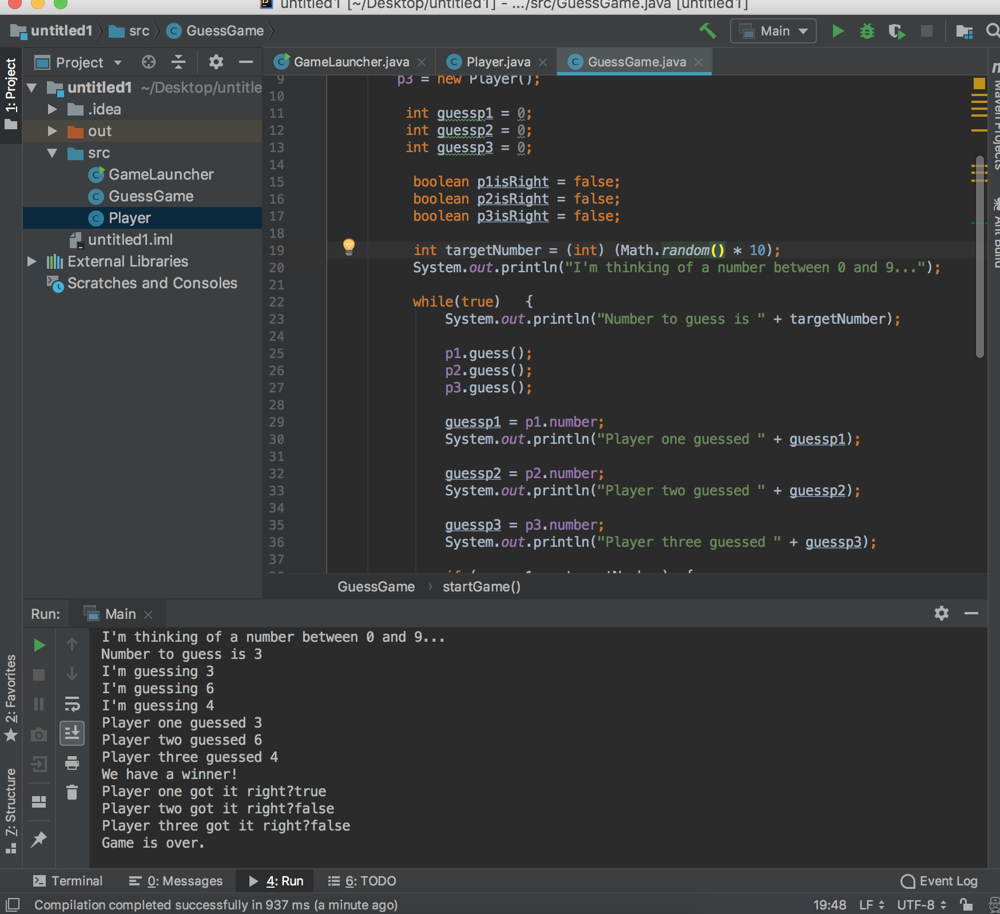

Hello! My name is Charles McCampbell-Hill and I am currently a student at Florida Gulf Coast University. I am passionate in all that I do but more specifically I am passionate about both computers and the joys that they can produce. In my free time I enjoy playing videogames, and through the years I have become somewhat of a critic.
I am currently a junior at Florida Gulf Coast University with a major in Software Engineering. I am passionate about creating a pleasurable experience with users and creating something that will positively impact the world. Current experience with software include completion of multiple MITEdX courses, attendance at the 2019 Hertz Hackathon, and coding courses as FGCU. In the future I can see myself owning my own tech company that is dedicated to satisfying their users without robbing them of joy. Some examples of my work will be listed below.
This is a game I created while reading the book "Headfirst Java". The code created allows 3 NPCs(Non Playing Characters) to have a chance at guessing a random number 0-9. Using loops, the game runs until one player has successfully guessed the correct number. If not, the game will run forever. I love taking screenshots of successful project to mark accomplishment points in my career. This one is especially important to me in that it was the first project that pushed me to switch to a software engineering major. Upon completion, I was still a mere marketing major, but something about the idea of being able to make cool things like this for a living caused me to switch.
